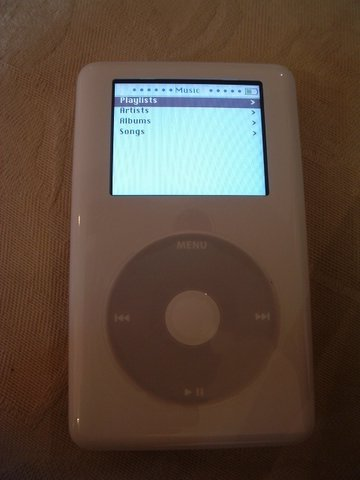
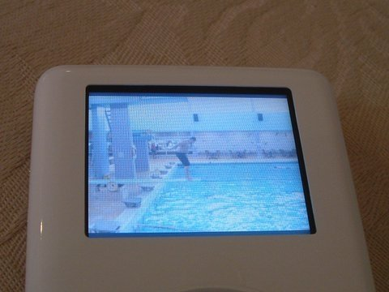
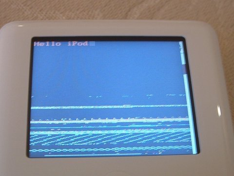

Experiments with an iPod
What is this iPod?
An iPod is a brand of portable digital audio player designed by Apple Computer. The first three generations of iPod use two ARM 7TDMI-derived CPUs running at 90 MHz, while later models have variable speed chips with a peak speed of 80 MHz to save battery life.
This article is intended for those who want to either use their iPod with Linux, or use Linux on their iPod.
Connecting and Locating your iPod
The first step is to connect the iPod to your USB port, then determine what Linux device the iPod is connected as:
# cat /proc/scsi/scsi Attached devices: Host: scsi0 Channel: 00 Id: 00 Lun: 00 Vendor: Apple Model: iPod Rev: 1.50 Type: Direct-Access ANSI SCSI revision: 02
scsi0 means that iPod is connected to
/dev/sda, scsi1 means that iPod is
connected to /dev/sdb, and so on. In this article,
I'll use /dev/sda as the default assumption;
obviously, you'll need to change it if your iPod uses a different
device.
Mounting and Unmounting Your iPod
Now we can explore the iPod. For this, we need to mount it:
# mkdir /mnt/myIpodSongs # mount -t vfat /dev/sda2 /mnt/myIpodSongsAfter mounting, the contents of the iPod can be browsed as a normal file system.
When we are done exploring, we need to unmount the iPod:
# umount /dev/sda2
Copying and playing music
Ok, this was neat, but what about playing some music? On Linux,
gtkpod can be used to copy and organize your music
into playlists. After installing gtkpod, the mount point of the iPod
can be specified from "Edit->Edit Preferences". Once the mount
point is added, gtkpod lets you create and modify
playlists, add or remove songs, and even export your Thunderbird or
Evolution data to the iPod.
Podcasts
Podcasts are radio-style shows for the iPod. Unlike streaming audio, which requires you to listen in real time, podcasting lets you control how and when you hear your favorite shows. Some of the podcasting clients available on Linux are amaroK and BashPodder, a command line utility to download podcasts.
Installing Linux on the iPod
Now that we know how to use iPod on Linux, it's time to use Linux on an iPod. Why bother to install Linux on an iPod? Because it includes loads of new games, a movie player, a voice recorder, and the freedom to create new applications. For those who are brave enough to explore this exciting option, iPodLinux has a distribution you can use; the first, second, and third generations of iPod are officially supported.
After playing with the installer for a bit, I was able to install iPodLinux on my 60GB Photo iPod. The port uses uClinux, a Linux flavor designed for devices that lack a memory management unit (MMU). While the iPod has some MMU-type capabilities, they are not sufficient to support the Linux kernel.
Before installing Linux, it's a good idea to make a backup of the iPod boot loader and OS, so they can be restored if something goes wrong:
# dd if=/dev/sda of=ipod_boot_sector_backup count=1 # dd if=/dev/sda1 of=ipod_os_partition_backupAfter the backup is done, the next step is to create a new partition on the iPod to hold the root file system for Linux.
A partition can be created by using the following command:
# fdisk /dev/sdaI created the following partitions on my 60GB iPod:
Device Boot Start End Blocks Id System /dev/sda1 * 1 1 8001 0 Empty /dev/sda2 * 6 7296 58564957+ b W95 FAT32 /dev/sda3 2 5 32130 83 Linux
Once the partitioning is done, create a filesystem with an ext3 journal:
# mke2fs -j /dev/sda3and set the maximal mount count between two filesystem checks to zero to prevent
fsck being run on it:
# tune2fs -c 0 /dev/sda3
To install the Linux kernel and the boot loader, download either the Official Boot loader (for the 1st, 2nd, and 3rd generation iPod) or the 4th generation photo iPod version. Also, download the latest kernel from the nightly build. Extract the kernel and boot loader into a directory of their own. Next, extract the Apple image from the boot loader and create a new image including Linux and Apple OS (here, the kernel is named uclinux-2.4.24-ipod2.bin):
# ./make_fw -3 -o apple_os.bin -e 0 ipod_os_partition_backup # ./make_fw -3 -o my_sw.bin -i apple_os.bin -l uclinux-2.4.24-ipod2.bin loader.binNOTE: -3 is required in make_fw only for 4th generation iPods.
Once this is done, we can copy the new image and kernel modules to the iPod:
# dd if=my_sw.bin of=/dev/sda1 # mkdir /mnt/ipod # mount -t ext3 /dev/sda3 /mnt/ipod # cp -r lib /mnt/ipod # umount /mnt/ipod
For userland installation, I downloaded the iPodLinux FS and performed the following steps to install the filesystem:
Mount the iPod root partition:# mount -t ext3 /dev/sda3 /mnt/ipodExtract the filesystem:
# mkdir /mnt/linuxos # mount -o loop floydzilla-2005-08-28-ipod+iboy+doom.img /mnt/linuxos # cp /mnt/linuxos /mnt/ipodand finally, unmount the iPod partition:
# umount /mnt/ipod # umount /mnt/linuxos # eject /dev/sdaAnd we are done! But before you start playing Doom on iPod, it needs to be rebooted.
To reboot, disconnect your iPod from the USB port. If the iPod did not automatically reboot, hold down the menu and the play buttons for 3 seconds to reboot it. After rebooting, keep the back button pressed to boot Linux, otherwise the default interface will load.
 Programming your iPod
The first thing required to compile "hello world" on an iPod would, of course, be a new compiler. But why a new compiler? because iPod has ARM processors and a cross-compiler is required to compile programs for this architecture. Download the compiler for uclinux from http://www.uclinux.org/pub/uClinux/arm-elf-tools/.
After the cross compiler is installed, the next thing to do would be to write a 'hello iPod' program (save the following code as hello.c):
#include <stdio.h>
int main(void){ puts("Hello, iPod!"); return(0); }
Once done, compile the program:
# arm-elf-gcc -o hello hello.c -elf2fltcopy the program to the iPod:
# mount -t vfat /dev/sda2 /mnt/myIpodSongs # mkdir /mnt/myIpodSongs/myprogs # cp hello /mnt/myIpodSongs/myprogsand reboot the iPod after unmounting the partition:
# cd $HOME # eject /dev/sdaAfter booting into floydzilla, goto "File browser->/mnt/myprogs" and click on the "hello" to see output of the program on iPod. 
I am currently working for Induslogic, India. I have a Bachelor's degree in
Computer Science.
I am a strong supporter of Free Software. In my free time, I write
programs or read books. My areas of interest includes Device drivers, P2P
and operating systems. I maintain my blog at http://www.nirendra.net.
![[BIO]](../gx/authors/nirendra.jpg)